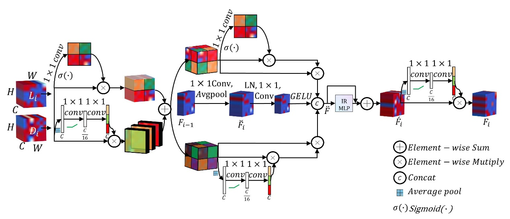

环境：Python
项目介绍：材料的性能与材料微观结构密切相关，不少期刊/会议论文中也明确结构直接决定性能。利用深度学习方法分析材料微观结构图像，从而建立回归模型预测出材料的性能是一种非常优秀的方法，然而，当下的许多工作中仅仅做到了将在其他视觉任务上表现优异的方法直接迁移到材料图像领域，预测材料性能，如，将在coco，ImageNet表现优异的resnet，alexnet等直接迁移到材料图像上，将最终的分类网络换成输出值为1个类别（性能值）的网络，然后加以训练，用以预测材料性能。 然而，在材料类的论文中，也明确了影响材料性能的不仅仅局限于材料图像的某些具体结构，事实上，全局特征和局部特征一样非常重要，局部特征细致刻画了材料的纹理，晶界密度以及孔隙率等，而全局特征则考虑了不同特征之间的长程依赖，可以发现材料中不同位置之间的相互作用关系，综合考虑更全面的信息，建立更加完整的映射关系。本程序所构建的网络同时考虑了局部网络分支和全局网络分支，分别对材料图像的局部特征和全局特征进行提取，并提出了专门的特征融合模块，对特征进行精细化融合处理，最终准确预测性能。
预测掺杂Al2O3的四方相YSZ涂层的热导率的模型架构
项目开源网址：
https://github.com/han-yuexing/RCFNet_Conv_Resnet50_MHSA/tree/main
（代码源自我们已经发表的文章。如果您在研究中使用了该软件，请引用参考文献如下：Chen Q, Han S, Song X, et al. Thermal conductivity prediction of Al2O3-doped tetragonal YSZ coatings using deep learning[J]. Journal of the European Ceramic Society, 2024.）